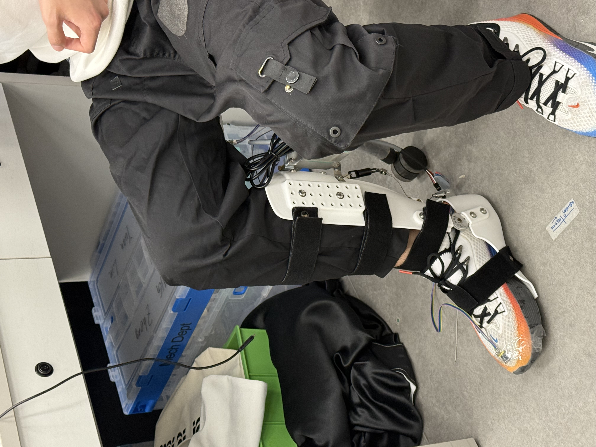
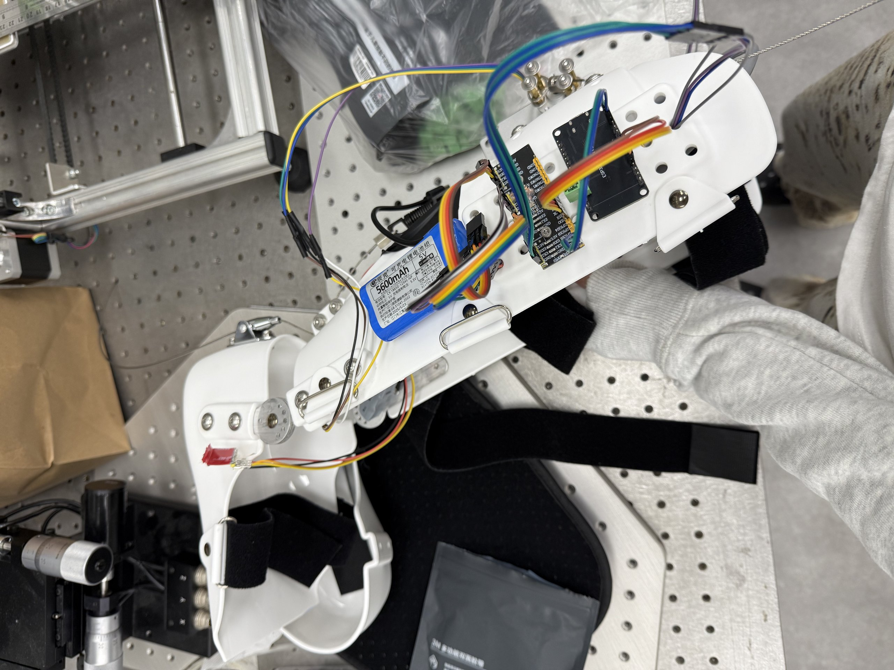
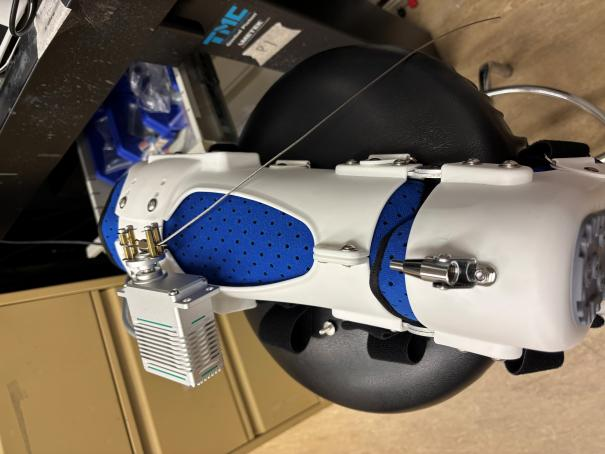
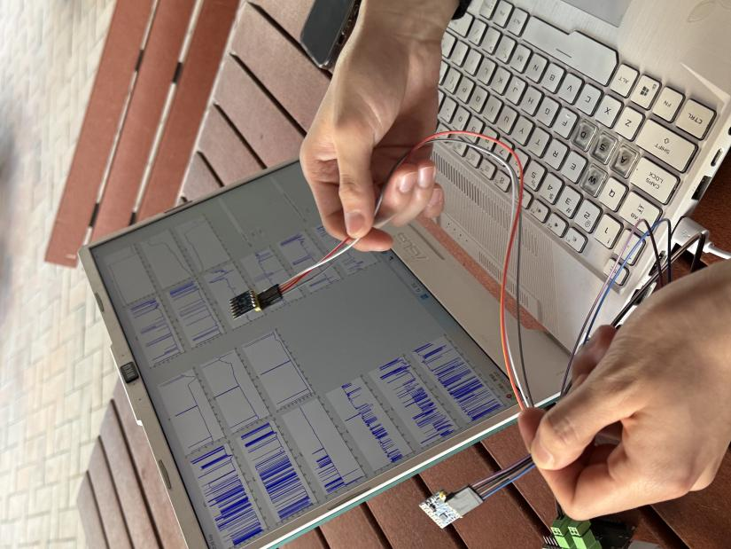

关节运动必须与踝关节兼容，不能在行走中卡滞或干涉。
Wearable Ankle Exoskeleton · Hardware & Sensing · 2026HKU IDT · 团队毕设，我负责硬件侧
把步态研究，转译成可穿戴的硬件。
在主动助力到来之前，先回答一个更基础的问题：设备怎样稳定地穿在人身上、顺畅地跟随踝关节运动，并把每一步可靠地记录下来。

装上执行器，不等于提供了助力。
主动助力是下一步研究，不是当前就能给出的结果。
要让未来的控制研究成立，硬件必须先满足四个前提。它们互相牵制——拧得更稳往往意味着更难转动，功能更强往往意味着更难穿戴。这个项目的工作，就是在这些约束里找到平衡。
绑缚要能抵抗位移，同时长时间穿戴仍然可耐受。
执行器与钢索的力，必须经由稳定的结构传递到足部。
运动要先被可靠地记录下来，才谈得上用于控制。
硬件侧的每一层，都经过我的手。
01结构建模与出图
使用 SolidWorks 与 Rhino 组织部件与接口：关节间隙、执行器安装区、足部与小腿的关系、干涉检查。
02硬件选型与集成
选定高扭矩舵机、钢索与弹性元件，确定「舵机 → 滑轮 → 钢索 → 弹簧 → 远端锚点」的传力路径并完成安装。
03装配与关节改装
在商用支具基底上完成装配，诊断金属关节的预紧冲突，设计并实施双侧踝关节的组合改装。
04传感链路搭建
四个 IMU 经 ESP32-S3 通过 TCP 接入 MATLAB，实现实时显示与顺序数据存储。
05验证分析与论文
设计分阶段验证流程，整理证据与边界，完成论文撰写与修订。


从自制框架，到商用支具基底。
最初方案从零自制穿戴框架
碳纤维板、金属板与 3D 打印件。设计与制造的自由度高，但从零解决贴合、绑缚与结构强度，制造与迭代周期都很长。
→
最终路线商用支具 + 项目化改装
以商用右腿支具为基底，把精力集中在真正的研究问题上：双侧关节改装、传力路径与传感集成。
这次切换是两个原因共同作用的结果：自制方案的制造与迭代成本太高，而商用支具自带成熟的人体工学界面与调节系统，穿戴可靠性更有保障。把「怎么穿在人身上」交给成熟方案，项目才能聚焦在「怎样不干扰运动、怎样传力、怎样感知」。
一颗螺栓，两个互相冲突的要求。
原始金属关节中，螺栓的轴向预紧同时决定两件事：夹得越紧，侧向旷量越小、关节越稳定；但金属对金属的接触面摩擦也越大。装配后手动旋转检查时，这个问题立刻显形。

State A · 螺栓拧紧稳定，但转不动
- 轴向夹紧，侧向旷量更小，关节感觉更稳
- 金属面摩擦增大，旋转卡滞、出现粘滑
- 手动转动时明显费力、时有顿挫
State B · 螺栓放松顺畅，但会晃
- 间隙恢复，旋转变得轻松
- 侧向出现旷量，关节晃动
- 反复运动中螺母逐渐退松
用三个零件，把冲突拆开。
思路不是「拧紧或放松」二选一，而是把原来挤在一颗螺栓上的三件事——降低摩擦、提供预紧、保持不松——分别交给三个零件。
隔开两块旋转的金属板，把金属对金属的摩擦换成低摩擦滑动面。
降低摩擦提供柔性的轴向预紧，让关节保持贴合，又不会刚性过紧。
柔性预紧靠尼龙圈抵抗反复运动带来的渐进松脱，把预紧保持住。
保持力旋转顺畅度
卡滞与间歇性粘滑
手动旋转更连续、更顺滑
启动力度
螺母拧紧时很难启动转动
主观上启动明显更省力
稳定性
放松后侧向旷量明显
手动检查中卡滞不再显著
以上是改装前后的定性观察，不是仪器测量。摩擦扭矩、关节旷量、预紧力与紧固保持力的量化测试，属于下一阶段工作。一个教训也记在这里：改装完成后的状态没有留下照片，下一次我会记录每一个阶段。
四个 IMU，把运动变成数据。
四个 IMU 分别安装在前足、足跟、小腿与大腿，用于记录大腿、小腿与足部的姿态变化——这些信号未来可以支持步态相位估计。当前的验证止步于「采集可靠」。
4× IMU→ESP32-S3→TCP→MATLAB 实时曲线→MAT 文件存储
已验证：TCP 连接、多通道实时绘图、滚动窗口显示与顺序数据保存。未验证：物理单位、坐标轴定义、有效采样率、延迟与丢包，以及传感器分组与身体位置的对应关系——校准与步态标注是下一步。

从台架，到穿戴，到真正的行走。
- 传感器数值可观察
- 双 IMU 实时曲线
- 连接与数据保存验证
- 四枚 IMU 安装到位
- 电池供电独立采集
- 绑缚固定与走线检查
- 站立、直行、转向、抬腿
- 全程无外部支撑
- 无明显松脱、触地或跌倒
50m约 30 秒内完成，一位自愿参与的团队成员，无墙面、无搀扶、无辅助器具
“可以穿戴，但有点重。”——穿戴者的原话反馈
没有验证的，和已验证的一样重要。
- 舵机未通电：助力、位移与扭矩均未测量
- 关节改装后无录像，视频早于关节修改
- 摩擦扭矩、旷量、预紧与耐久未量化
- IMU 未校准，无步态事件标注
- 单人演示，无对照、无步态指标
- 无安全认证，不构成任何临床结论
08 · Outcome & next
1台可穿戴、传感就绪的右腿原型
4 路 IMU · 双侧改装关节 · 完整传力路径
4 路 IMU · 双侧改装关节 · 完整传力路径
交付的是硬件就绪，不是助力性能。
项目交付了一个文档完整、集成到位、传感可用的研究平台：改装后的商用支具基底、双侧踝关节、执行器与钢索路径，以及从 IMU 到 MATLAB 的完整采集链路。主动助力、闭环控制与临床效果，都不在本次交付范围内。
09 · Reflection
硬件教会我的三件事。
装上了，不等于起作用了
证据的范围必须匹配声明的范围。集成、运行与效果是三个不同层级的结论，混在一起就是夸大。
约束本身就是设计题
预紧冲突看起来是「稳定还是顺滑」的二选一，拆开之后，它只是三个可以被分别满足的需求。
就绪是控制研究的地基
传感采集是第一层，不是结论。先让运动被可靠地看见，助力时序和闭环控制才有起点。